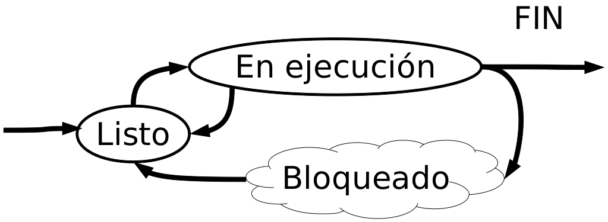
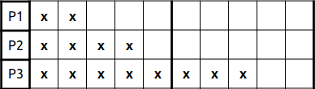
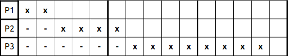
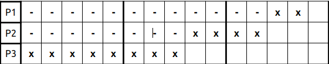
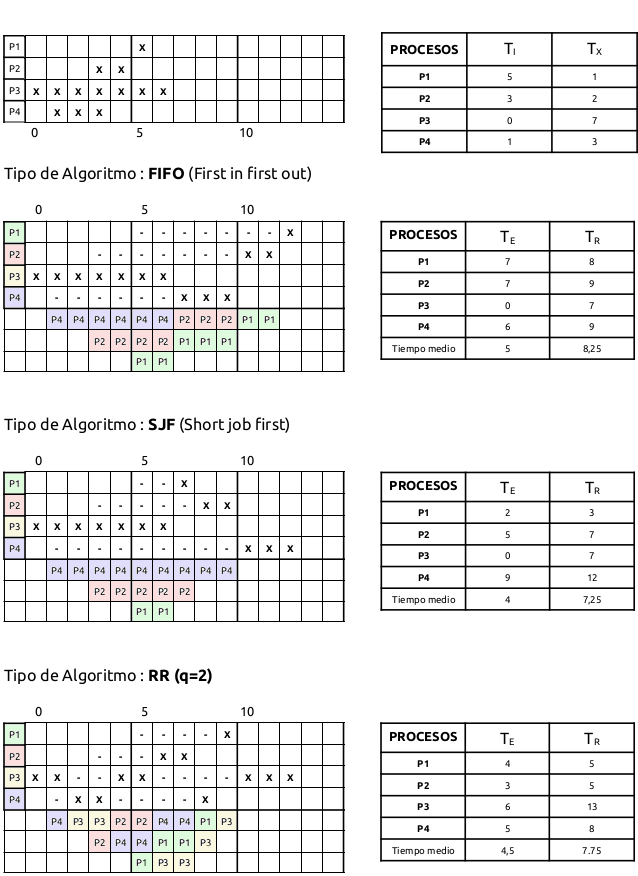
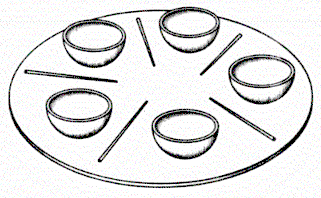

Gestión de procesos#
Veamos el siguiente programa:
/* primos.c is a free (GPLv3) program to list prime numbers using c
* Copyright (C) 2009 by Daniel González Trabada
*
* This program is free software: you can redistribute it and/or modify
* it under the terms of the GNU General Public License as published by
* the Free Software Foundation, either version 3 of the License, or
* (at your option) any later version.
*
* This program is distributed in the hope that it will be useful,
* but WITHOUT ANY WARRANTY; without even the implied warranty of
* MERCHANTABILITY or FITNESS FOR A PARTICULAR PURPOSE. See the
* GNU General Public License for more details.
*
* You should have received a copy of the GNU General Public License
* along with this program. If not, see <http://www.gnu.org/licenses/>.
*/
#include <stdio.h>
#include <stdbool.h>
#include <unistd.h>
int main() {
int c,d,n=10;
bool es_primo=false;
c=0;
while (c < n) {
c++;
es_primo=true;
for (d = 2; d < c; ++d) {
if (c % d == 0) {
es_primo = false;
break;
}
}
if (es_primo) {
printf("%d ", c);
sleep(1);
}
}
printf("\n");
return 0;
}
Lo compilamos y ejecutamos de la siguiente forma:
$ gcc primos.c
$ ./a.out
1 2 3 5 7
Si ahora cambiamos la sentencia sleep(100) para que tarde un poco más y lo ejecutamos en el background varias veces, observamos:
$ gcc primos.c && ./a.out &
[1] 8310
./a.out &
[2] 8318
$ ./a.out &
[3] 8319
$ jobs
[1] Ejecutando gcc primos.c && ./a.out &
[2]- Ejecutando ./a.out &
[3]+ Ejecutando ./a.out &
traemos al primer plano el proceso 2 y pulsando <ctrl>+z lo paramos:
$ fg %2
./a.out
^Z
[2]+ Detenido ./a.out
$ jobs
[1] Ejecutando gcc primos.c && ./a.out &
[2]+ Detenido ./a.out
[3]- Ejecutando ./a.out &
traemos al primer plano el 1 proceso y lo matamos utilizando <ctrl>+c
$ fg %1
gcc primos.c && ./a.out
^C
$ jobs
[2]+ Detenido ./a.out
[3]- Ejecutando ./a.out &
Para matarlo no es necesario pasarlo al plano principal podemos hacerlo con kill %n
$ kill %3
$ jobs
[2]+ Detenido ./a.out
[3]- Terminado ./a.out
Como podemos ver proceso es un programa que está en ejecución. Los procesos pueden estar en alguno de los siguientes estados:
{kind=link}
El sistema operativo mantiene para cada proceso un bloque de control o (PCB) proces control block, donde guarda para cada proceso la información necesaria para reactivarlo si es suspendido, cuando el sistema operativo entrega a la CPU un número, tiene que guardar el estado del proceso que estaba ejecutando y cargar el nuevo proceso, esto es un cambio de contexto, hay algunas CPUs que tienen varios juegos de registros, de manera que se hace simultáneamente cambiando el puntero al actual juego de registros. El problema es que si hay más procesos que conjunto de registros es posible que tengamos que apoyarnos en la memoria, es decir el cambio de contexto es una operación costosa.
Una forma de disminuir el coste de los cambios de contexto es utilizando threads o hilos. Los hilos de un mismo proceso comparten el mismo espacio de direccionamiento, así como también los recursos abiertos y la información del proceso (PCB) gracias a esto consiguen que su creación y el cambio de contexto sea mucho más barato.
Planificación de procesos#
Cuando el proceso termina hacemos un cambio de contexto, entonces el SO tiene que decidir que proceso listo va a empezar a pasar a ejecución, vamos a ver el siguiente ejemplo con 2 procesos que ocupan (4,6), en el caso de ejecutar primero el de 4 y luego el de 6 el tiempo de espera medio será de (0+4)/2=2, sin embargo si primero ejecutamos el de 6, tendremos un tiempo de espera medio de (0+6)/2=3
Para elegir un proceso de la cola de procesos listos tenemos diferentes algoritmos:
FIFO (First in, first out) es decir el primero que llega es el primero en ser atendido, cada proceso se ejecuta hasta que termina o se queda bolqueado.
SJN (Shortest-job-nest) toma como siguiente el proceso que va ha terminar antes. Vamos a ver el siguiente ejemplo de tres procesos a<b<c, para este caso tendríamos un tiempo de espera de: (a+(a+b))/3=(2a+b)/3, de hacerlo al revés tendríamos (2c+b)/3 es decir la diferencia es de 2/3(a-c). El problema de este algoritmo es el desconocimiento del tiempo que va a durar un proceso.
Ejemplo : (2,4,8)
Si lo hacemos utilizando el proceso que va a terminar antes tendríamos un tiempo de espera medio TE = (2+(2+4))/3 = 2.66 y el tiempo medio de ejecución es TR = (2+6+14)/3 = 7.333
si lo hacemos al reves TE = (8+(8+4))/3 = 6.66 y el tiempo medio de ejecución es TR = (14+12+8)/3 = 11.33
RR (Round-Robin) Utiliza el algoritmo FIFO con la variante de que un proceso no puede estar utilizando la CPU por más de un quantum, cuando finaliza esta quantum el SO provoca una interrupción haciendo que entre el siguiente proceso, si el quantum es muy grande recuperamos el FIFO si en demasiado pequeño entonces tendremos un costo muy elevado en los cambios de contexto. El que el proceso se esté ejecutando pasa al final de la cola, en el caso de que entre uno nuevo se pondría detrás.
Vemos el siguiente ejemplo:
Plantilla para ejercicios#
Bloqueos#
Edsger Wybe Dijkstra propuso el problema de la cena de los filósofos, Cinco filósofos se sientan a comer arroz, para ello necesitan dos palillos, en total solo hay 5 palillos, así que mientras unos comen otros piensan y hablan, el interbloqueo aparece cuando todos quieren comer a la vez y toman un palillo a su izquierda, cuando van a por el palillo de la derecha se quedan esperando interbloqueados.
